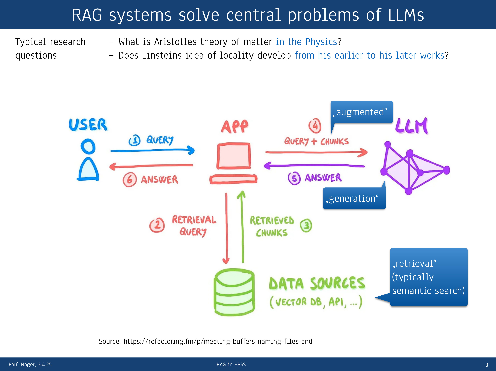
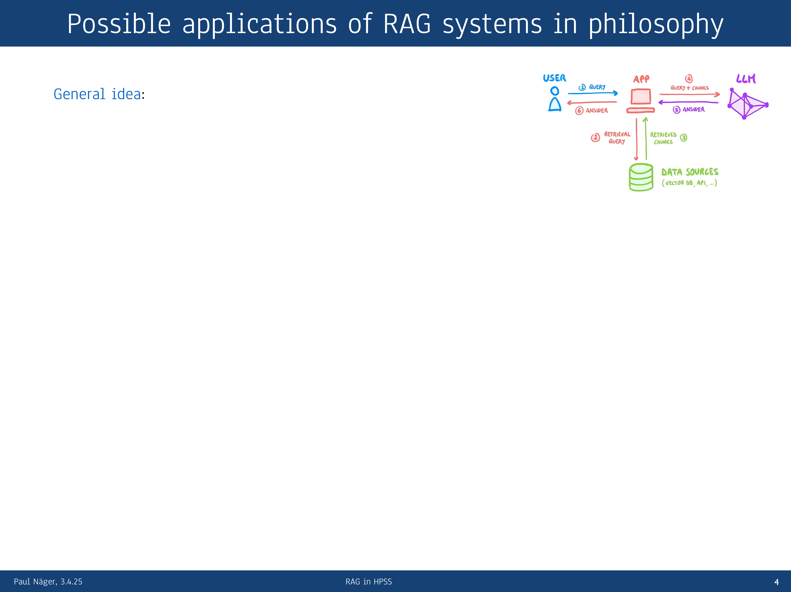
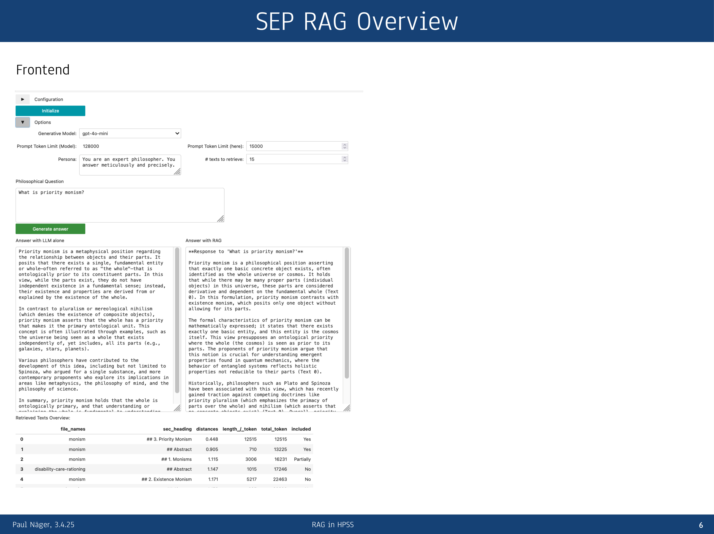
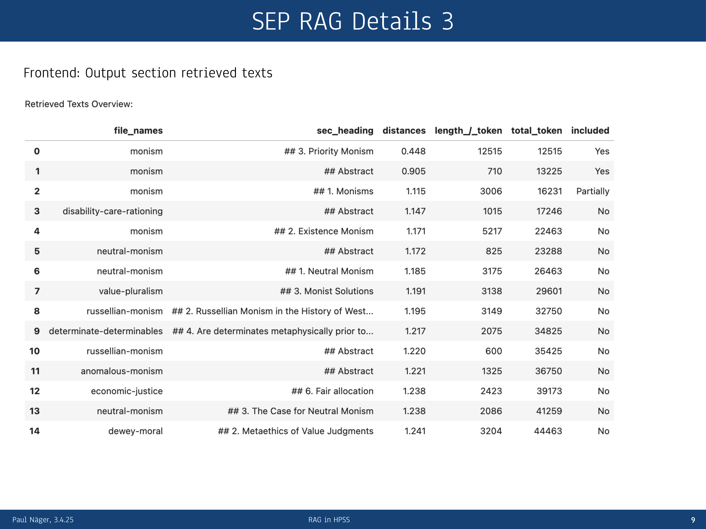

12 Applying Retrieval-Augmented Generation to Philosophical Research: A Case Study and Methodological Insights
Overview
This chapter presents a methodological exploration into applying Retrieval-Augmented Generation (RAG) systems to enhance philosophical research. It confronts the inherent limitations of standard Large Language Models (LLMs), including their inability to access full texts, their propensity for hallucination, their constrained context windows, and their lack of source attribution. The authors propose the RAG architecture as a robust solution, integrating a specific corpus—such as the works of Aristotle or Einstein—with an LLM to furnish verifiable, context-rich answers.
A practical case study documents the development of a RAG system that uses the Stanford Encyclopedia of Philosophy (SEP) as its knowledge base. This project reveals that a naive implementation yields poor results, necessitating significant refinement of models, hyperparameters, and algorithms like reranking. The investigation highlights the critical role of hyperparameter optimisation, particularly chunk size. For the highly structured SEP corpus, chunking by main section surprisingly outperformed more granular methods.
The chapter concludes that whilst RAG systems offer profound advantages for scholarly tasks by reducing hallucinations and enabling citations, their effectiveness is highly contingent on the corpus, the nature of the research questions, and rigorous evaluation by domain experts. Future work points towards developing more flexible, agentic RAG systems capable of discerning between different query types.
12.1 Scholarly Challenges of Large Language Models

Standard Large Language Models can produce differentiated answers to complex philosophical questions, such as analysing Aristotle’s theory of matter or tracing the evolution of Einstein’s concept of locality. Their utility for deep scholarly research, however, is constrained by several fundamental problems. A Retrieval-Augmented Generation system offers a structured approach to overcome these limitations.
The core challenge with LLMs is their lack of direct access to full-text sources. Although trained on vast datasets, their training mechanism is explicitly designed to learn generalisable patterns of text production, not to memorise and recall texts verbatim. Consequently, when prompted for a specific quotation, an LLM might either refuse or, more problematically, hallucinate a response. Such an outcome is antithetical to philosophical research, which demands precise engagement with the fine-grained formulations of original texts.
Furthermore, the context window of LLMs, whilst growing, remains a significant constraint. A model like ChatGPT 4.0 offers a 128,000-token context, yet this is quickly exhausted when dealing with the large corpora typical of scholarly inquiry. RAG systems directly address these issues. The architecture retrieves relevant documents from a specified data source—for instance, the complete works of a philosopher—using methods like semantic or hybrid search. These retrieved text chunks then augment the user’s prompt, feeding the LLM with the exact textual evidence needed to formulate a grounded response. This process not only provides access to the verbatim text but also solves the critical problem of attribution, as the system can cite the sources for its claims, much like the functionality seen in tools such as Perplexity.
12.2 A Case Study in Philosophical RAG

The central ambition in applying RAG to philosophy is to facilitate a deep, interactive dialogue with scholarly corpora, such as the complete works of John Locke. This approach promises significant benefits for both didactics and advanced research. For students, it offers an intuitive pathway into complex texts, allowing them to move from broad inquiries to specific epistemological questions. For researchers, RAG systems can function as reliable tools for looking up facts, exploring unexamined corpora, and identifying key passages for close reading. The ultimate goal is for these systems to assist in answering detailed research questions directly.
To explore this potential, the authors developed a prototype RAG system using the Stanford Encyclopedia of Philosophy (SEP) as its knowledge base, with the initial aim of creating a useful tool for the philosophical community. The team scraped the SEP content into Markdown to serve as the data source. However, a straightforward, textbook implementation of the RAG architecture yielded surprisingly poor results; the answers were often inferior to those generated by a standalone LLM like ChatGPT. This discovery shifted the project’s focus towards rigorous optimisation.
Improving the system’s performance necessitated a process of extensive adjustment, involving modifications to the models, their hyperparameters, and the introduction of more complex algorithms such as reranking. This optimisation work is largely a matter of trial and error, guided by theoretical principles but ultimately validated by empirical results. A significant challenge emerged in this phase: the evaluation of output quality. Unlike historical queries for atomic facts, philosophical questions elicit complex, unstructured propositions. Developing robust standards to evaluate the factual correctness of these nuanced answers is a non-trivial task that remains a key hurdle.
12.3 System Interface and Comparative Analysis

The project team developed a custom frontend to facilitate interaction with and evaluation of the Stanford Encyclopedia of Philosophy RAG system. The interface, comprising a few thousand lines of code, provides users with controls to configure key hyperparameters, including prompt length and the number of documents to retrieve, alongside a field for submitting their query.
A central feature of the design is its comparative output display, which is structured to aid analysis. On the left, the system shows a benchmark answer generated by the chosen LLM operating in isolation. On the right, it presents the corresponding answer from the RAG-augmented system. This side-by-side layout enables a direct and immediate comparison, making it easier to assess the value added by the retrieval process.
To ensure transparency and aid in debugging, the system’s output concludes with a comprehensive list of the texts found during the retrieval stage. This list details the source article names and the specific section headings that the system identified as relevant. Crucially, it also indicates which of these text chunks were successfully included in the final augmented prompt and which were ultimately excluded due to the LLM’s prompt length limitations, providing clear insight into the retrieval and augmentation process.
12.4 Optimising Hyperparameters and Chunk Size

The authors conducted experiments to optimise key hyperparameters, focusing specifically on the ‘chunk size’ used for text retrieval. They considered three primary chunking strategies: using a fixed number of words, a common practice in computer science; splitting the text by paragraphs; or dividing it by semantic sections.
To some surprise, the investigation revealed that using the main sections of the Stanford Encyclopedia of Philosophy articles as the retrieval units yielded the best results. This outcome was unexpected because the embedding model’s context limit was just over 500 words, whereas the average length of a main section in the corpus was around 3,000 words.
The team’s hypothesis for this result centres on the unique structure of the data source. The SEP is a highly systematised and well-ordered work. It is likely that the initial 500 words of each major section effectively summarise its core arguments, providing the embedding model with enough information to assess its relevance to a query accurately. This finding underscores a critical lesson: the optimal chunking strategy is not universal but is instead highly contingent on the specific nature of the corpus and the research questions posed. Consequently, this approach might not transfer well to more heterogeneous texts. Future plans involve experimenting with embedding models that possess longer context windows to explore potential further improvements.
12.5 Conclusion and Future Directions
Retrieval-Augmented Generation systems present clear advantages for scientific and scholarly work. They successfully integrate verbatim corpora and specialised domain knowledge, a capability that dramatically reduces the incidence of LLM hallucinations. Moreover, their ability to cite relevant source documents makes them, in principle, exceptionally well-suited to assisting with academic tasks.
Their practical application, however, requires caution. RAG systems are not off-the-shelf solutions; they demand careful configuration, as the appropriate settings for retrieval and generation depend heavily on the specific corpus and the kinds of questions being asked. The evaluation of their output is therefore crucial, demanding a representative set of test questions and expected answers—a task for which domain experts are indispensable.
Several open challenges remain. The quality of a RAG system’s answer degrades significantly if no relevant documents are found in the retrieval phase, a scenario that necessitates careful prompt engineering. A notable, counter-intuitive finding is that these systems often perform poorly on broad, overview questions. The likely reason is that the RAG process forces the LLM to focus on the local information contained within the retrieved text chunks. This local focus can distract the model from synthesising information and adopting the wide perspective needed to answer a general query effectively.
To address this, future development must move towards more flexible, agentic RAG systems. Such systems would be capable of discerning between different types of questions and dynamically adjusting their information processing strategy, paving the way for more sophisticated scholarly assistants.